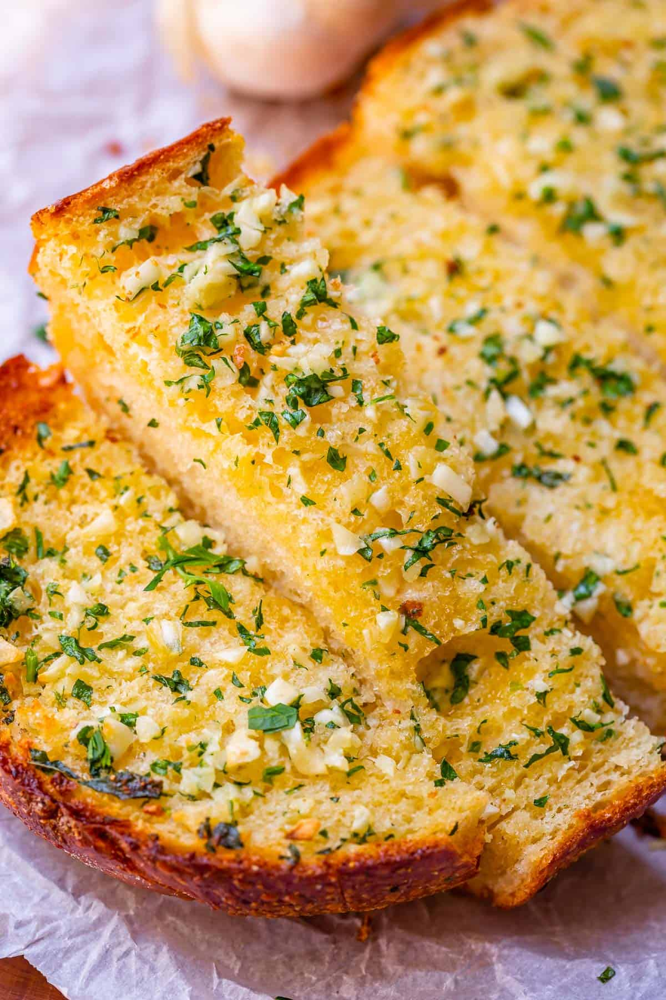

Garlic Bread

Here's another link for where I found this awesome recipe.
Description
Garlic bread is one of the best sides to have with lunch or dinner, and goes great with the Cajun Steak Bites and Sausage Marinara Pasta recipes.
Ingredients
- 1 loaf of Italian bread (or your favorite choice of bread)
- 1/2 cup of butter (melted)
- 3 to 4 cloves of garlic (minced)
Steps
- In a small bowl, combine butter and garlic. Brush over cut sides of bread; sprinkle with parsley. Place, cut side up, on a baking sheet.
- Bake at 350° for 8 minutes. Broil 4-6 in. from the heat for 2 minutes or until golden brown. Serve warm.